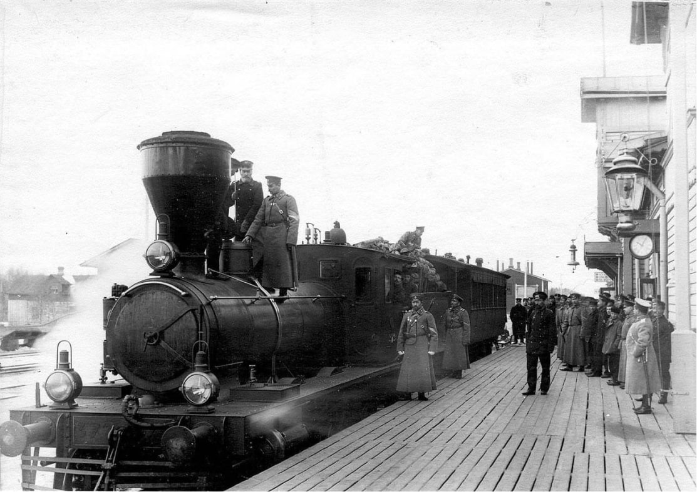

Поезда Дореволюционной России
Основные достижения до 1917 года:
- Создание широкой сети железных дорог
- Формирование стандарта ширины колеи (1524 мм)
- Развитие паровозостроения
- Строительство крупных железнодорожных мостов
- Пассажирские перевозки
- Фирменные пассажирские составы
- Почтовые и грузовые поезда
Крупнейшие магистрали:
- Транссибирская магистраль
- Китайско-Восточная дорога
- Николаевская дорога
- Варшавско-Венская линия
